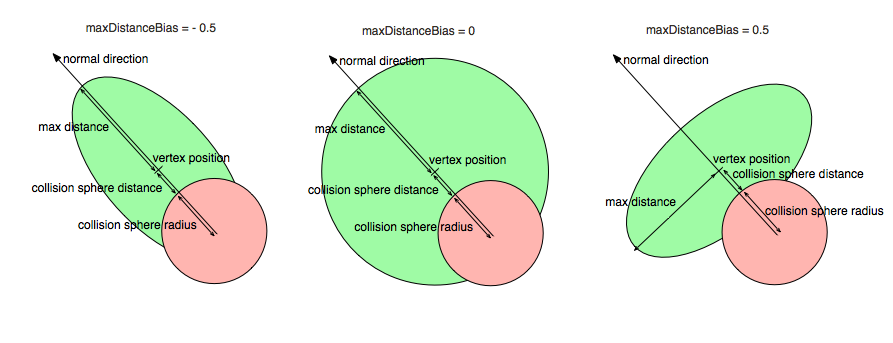
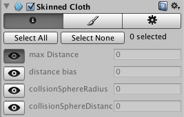
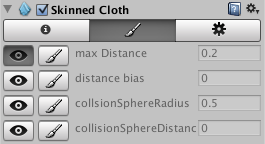
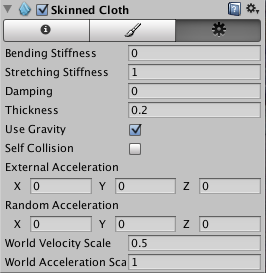

Skinned Cloth

The SkinnedCloth component works together with the SkinnedMeshRenderer to simulate clothing on a character. If you have an animated character which uses the SkinnedMeshRenderer, you can add a SkinnedCloth component to the game object with the SkinnedMeshRenderer to make him appear more life-like. Just select the GameObject with the SkinnedMeshRender, and add a SkinnedCloth component using Component->Physics->Skinned Cloth.
What the SkinnedCloth component does, is to take the vertex output from the SkinnedMeshRenderer and apply clothing simulation to that. The SkinnedCloth component has a set of per-vertex coefficients, which define how free the simulated cloth can move with respect to the skinned mesh.
These coefficients can be visually edited using the scene view and the inspector, when the game object with the SkinnedCloth component is selected. There are two editing modes, selection and vertex painting. In selection mode, you click on vertices in the scene view to select them, and then edit their coefficients in the inspector. In vertex paining mode, you set the coefficient values you want in the inspector, enable the "paint" button next to those coefficients you want to change, and click on the vertices to apply the values to those.
Note that skinned cloth simulation is only driven by the vertices skinned by the SkinnedMeshRenderer, and will not otherwise interact with any colliders. This makes skinned cloth simulation much faster then the fully physical Interactive Cloth component, as it does not need to be simulated on the same frame rate and the same thread as the rest of the physics simulation.
You can disable or enable the skinned cloth component at any time to turn it on or off. Turning it off will switch rendering to the normal SkinnedMeshRenderer, so you can switch between these whenever needed to dynamically adjust for varying performance. You can also smoothly cross-fade between the two modes from a script using the SkinnedCloth.SetEnabledFading() method, to make the transition unnoticeable to the player.
Note that cloth simulation will generate normals but not tangents. If the source mesh has tangents, these will be passed to the shader unmodified - so if you are using a shader which depends on tangents (such as bump mapped shaders), the lighting will look wrong for cloth which has been moved from it's initial position.
Cloth Coefficients
There a four coefficients per vertex, which define how cloth vertices can move with respect to the skinned vertices and normals. These are:
| Max Distance | Distance a vertex is allowed to travel from the skinned mesh vertex position. The SkinnedCloth component makes sure that the cloth vertices stay within maxDistance from the skinned mesh vertex positions. If maxDistance is zero, the vertex is not simulated but set to the skinned mesh vertex position. This behavior is useful for fixing the cloth vertex to the skin of an animated character - you will want to do that for any vertices which shouldn't be skinned, or for parts which are somehow fixed to the character's body (such as the waist of trousers, fixed by a belt). However, if you have large parts of the character which should not use cloth simulation (such as the face or hands), for best performance, set those up as a separate skinned mesh, which does not have a SkinnedCloth component. |
| Distance Bias | Distorts the sphere defined by the maxDistance based on skinned mesh normals. The feature is disabled for a value of 0.0 (default). In this case the max distance sphere is undistorted. Decreasing the maxDistanceBias towards -1.0 reduces the distance the vertex is allowed to travel in the tangential direction. For -1.0 the vertex has to stay on the normal through the skinned mesh vertex position and within maxDistance to the skinned mesh vertex position. Increasing maxDistanceBias towards 1.0 reduces the discance the vertex is allowed to travel in the normal direction. At 1.0 the vertex can only move inside the tangental plane within maxDistance from the skinned mesh vertex position. |
| Collision Sphere Radius and Collision Sphere Distance | Definition of a sphere a vertex is not allowed to enter. This allows collision against the animated cloth. The pair (collisionSphereRadius, collisionSphereDistance) define a sphere for each cloth vertex. The sphere's center is located at the position constrainPosition - constrainNormal * (collisionSphereRadius + collisionSphereDistance) and its radius is collisionSphereRadius, where constrainPosition and constrainNormal are the vertex positions and normals generated by the SkinnedMeshRenderer. The SkinnedCloth makes sure that the cloth vertex does not enter this sphere. This means that collisionSphereDistance defines how deeply the skinned mesh may be penetrated by the cloth. It is typically set to zero. collisionSphereRadius should be set to a value larger then the distance between the neighboring vertices to make sure the cloth vertices will not be able to slip around the collision spheres. In such a setup, the cloth will appear to collides against the skinned mesh. |
Refer to this image for a visual representation on how these coefficients work with respect to a skinned vertex and normal for different values of maxDistanceBias. The red area is the collision sphere defined by collisionSphereRadius and collisionSphereDistance, which the cloth vertex cannot enter. Thus, the green area, defined by maxDistance and maxDistanceBias subtracted by the red area defines the space in which the cloth vertex can move.

The SkinnedCloth inspector
When you select a GameObject with a SkinnedCloth component, you can use the SkinnedCloth inspector to edit cloth vertex coefficients, and other properties. The inspector has three tabs:
Vertex Selection Tool

In this mode you can select vertices in the scene view, and the set their coefficients in the inspector (see the previous section for an explanation on how the cloth coefficients work). It is possible to set multiple coefficients by holding the shift key, or by dragging a rectangle with the mouse. When multiple vertices are selected, the inspector will display average values for the vertices coefficients. When you change the values, however, that coefficient will be set to the same value for all vertices. If you switch the scene view to wireframe mode, you will also be able to see and to select back-facing vertices, this can be useful when you want to select full parts of the character.
To help you understand which values the coefficients have for all the vertices, you can click the eye icon next to a coefficient field, to make the editor visualize that coefficient in the scene view. This shows the vertices with the lowest value of that coefficient in a green tint, mid-range values will be yellow, and the highest values get a blue tint. The colors scale is always chosen relative to the used value range of that coefficient, and is independent of absolute values.
Vertex Painting Tool

Similar to the vertex selection, this is a tool to help you configure the vertex coefficient values. Unlike vertex selection, you don't need to click on a vertex before changing a value - in this mode, you just enter the values you want to set, enable the paintbrush toggle next to the coefficients you want to change, and then click on all vertices you want to set that value for.
Configuration

The third tab lets you configure various properties of the skinned cloth:
| Bending Stiffness | Bending stiffness of the cloth. |
| Stretching Stiffness | Streching stiffness of the cloth. |
| Damping | Damp cloth motion |
| Thickness | Thickness of the cloth surface. (0.001 - 10000) |
| Use Gravity | If enabled, gravity will affect the cloth simulation. |
| Self Collision | If enabled, the cloth can can collide with itself. |
| External Acceleration | A constant, external acceleration applied to the cloth. |
| Random Acceleration | A random, external acceleration applied to the cloth. |
| World Velocity Scale | How much world-space movement of the character will affect cloth vertices. The higher this value is, the more the cloth will move as a reaction to world space movement of the GameObject. Basically, this defines the air friction of the SkinnedCloth. |
| World Acceleration Scale | How much world-space acceleration of the character will affect cloth vertices. The higher this value is, the more the cloth will move as a reaction to world space acceleration of the GameObject. If the cloth appears lifeless, try increasing this value. If it appears to get unstable when the character accelerates, try decreasing the value. |